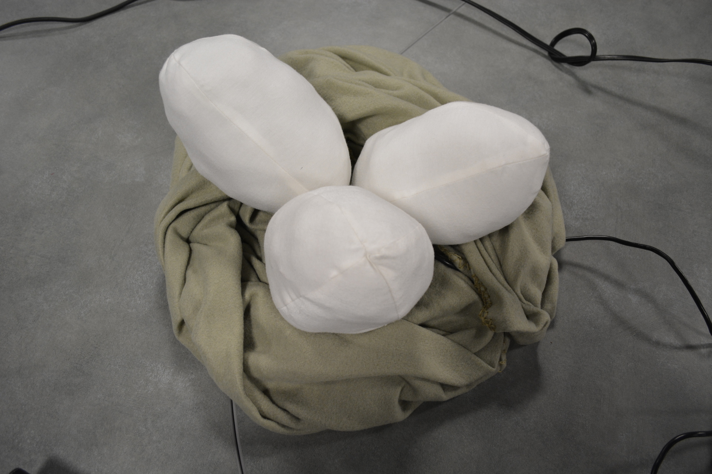
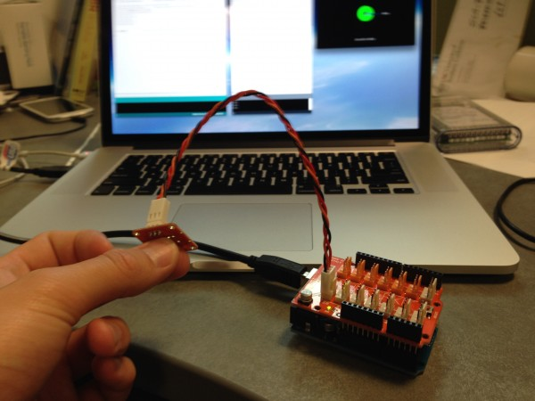
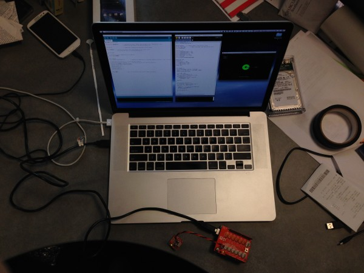
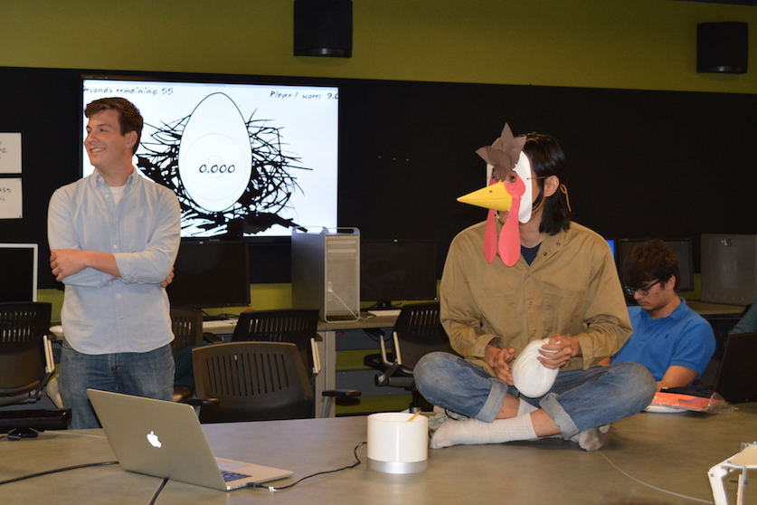
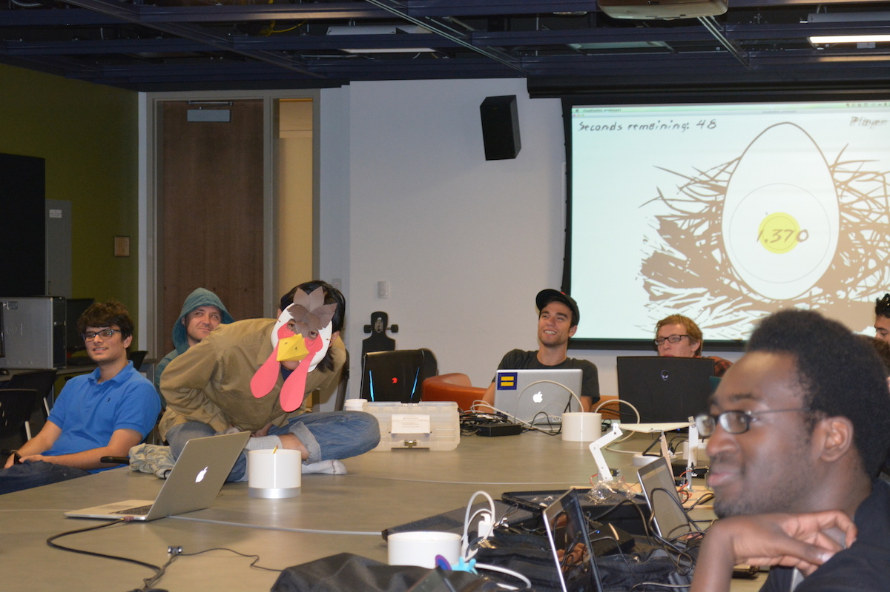

Being Broody is an absurdist multiplayer game where players assume the position of a mother bird incubating her eggs. Players don a mask and sit on a nest of handmade eggs with arduinos and thermistors embedded within them. The player that maintains the optimal incubation temperature wins. View on GitHub